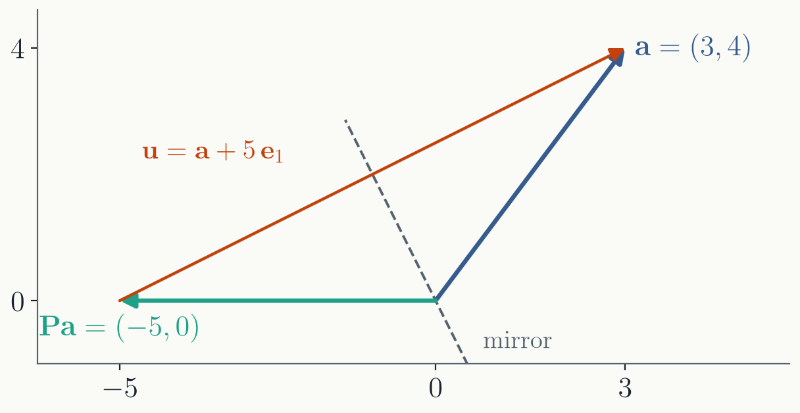
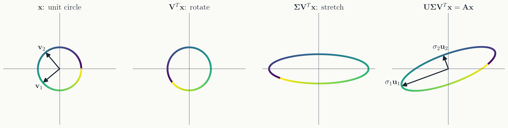

$\mathbf{Q}$ has orthonormal columns, $\mathbf{Q}^T\mathbf{Q} = \mathbf{I}$;
$\mathbf{R}$ is upper triangular.
We used it to solve systems
($\mathbf{R}\mathbf{x} = \mathbf{Q}^T\mathbf{b}$) and to find
eigenvalues (the QR iteration). It also works for rectangular
matrices.
But we never said how to find $\mathbf{Q}$
and $\mathbf{R}$.
Today: two ways to compute QR, one of which
fails in floating point. Then the decomposition that exists for
every matrix: the SVD.
In matrix form, that is
$\mathbf{A} = \mathbf{Q}\mathbf{R}$, with
$r_{ji} = \mathbf{e}_j\cdot\mathbf{a}_i$ above the diagonal and
$r_{ii} = |\mathbf{u}_i|$ on it. For our example:
The "orthonormal" vectors $\mathbf{e}_2$ and
$\mathbf{e}_3$ are $60°$ apart. The computer returns exactly this.
What went wrong
Only one rounding mattered: $1 + \varepsilon^2 \to 1$ in
$|\mathbf{a}_1|$. It changed $\mathbf{e}_1$ by about
$\varepsilon^2 = 10^{-16}$. Harmless, it seems.
In exact arithmetic that correction leaks into
$\mathbf{u}_2$, whose first entry is $\varepsilon^2$ rather than
$0$. After dividing by $|\mathbf{u}_2| \approx \sqrt{2}\,\varepsilon$,
the first entry of $\mathbf{e}_2$ is about $\varepsilon/\sqrt{2}$,
and $\mathbf{e}_2 \cdot \mathbf{a}_3 \approx \varepsilon/\sqrt{2}$
instead of $0$.
So the term $(\mathbf{e}_2 \cdot \mathbf{a}_3)\,\mathbf{e}_2$
that the rounded run skipped has size $\varepsilon$. And
$\mathbf{u}_3$ itself has size $\varepsilon$. The skipped term is
as big as the answer.
Subtracting nearly equal vectors leaves a
small remainder, and every small error is then a large fraction
of it: catastrophic cancellation (Lecture 1), one vector at a
time.
How close to dependent?
Combine the columns with unit-length
coefficients:
$\mathbf{A}\mathbf{x} = x_1\mathbf{a}_1 + \dots + x_n\mathbf{a}_n$,
$\ |\mathbf{x}| = 1$.
$$\kappa = \frac{\text{length of the longest such vector}}{\text{length of the shortest}}$$
Orthonormal columns: every unit combination
has length $1$, so $\kappa = 1$.
The $\varepsilon$ example: $(\mathbf{a}_1 + \mathbf{a}_2 + \mathbf{a}_3)/\sqrt{3}$
has length about $\sqrt{3}$; $(\mathbf{a}_1 - \mathbf{a}_2)/\sqrt{2}$
has length $\varepsilon$. So $\kappa \approx \sqrt{3}/10^{-8} \approx 1.7 \times 10^8$.
Large $\kappa$ means some combination of the
columns nearly cancels. That is exactly where Gram-Schmidt
subtracts nearly equal vectors.
How bad, in general
$60 \times 30$ random matrices, $\kappa$ from $1$ to
$10^{16}$. Dashed line: the $\varepsilon$ example.
Classical Gram-Schmidt
(the process above): complete loss by $\kappa \sim 10^9$.
Modified Gram-Schmidt, the
same subtractions in a different order: error grows in
proportion to $\kappa$.
Householder (next part):
rounding level, always.
Part II · Householder reflections
Reflect instead of subtract
The goal
Find an orthogonal matrix $\mathbf{P}$
that turns a column into a multiple of $\mathbf{e}_1$:
$\mathbf{P}$ reflects every vector in the
mirror perpendicular to $\mathbf{u}$. It is symmetric,
orthogonal, and its own inverse: reflecting twice changes
nothing.
In the figure, $\mathbf{a} = (3, 4)$ lands on
$(-5, 0)$. The arithmetic is on the next slide.

The reflection, by the numbers
Same $\mathbf{a} = (3, 4)$ as in the
Gram-Schmidt example. Send it onto the $x$ axis.
the target
$|\mathbf{a}| = 5$; take $\alpha = -5$ (why the minus sign: next slide)
$\mathbf{P}^T\mathbf{P} = \mathbf{I}$ and $\mathbf{P}\mathbf{P} = \mathbf{I}$: orthogonal, and its own inverse
The rows of $\mathbf{P}$ are the
Gram-Schmidt directions $\mathbf{e}_1$ and $\mathbf{e}_2$, up to
sign. One reflection found both at once.
Which sign for $\alpha$?
Both $\alpha = +|\mathbf{a}|$ and $-|\mathbf{a}|$ work on paper:
there are two mirrors.
But $u_1 = a_1 - \alpha$. If $\mathbf{a}$
already points almost along $\mathbf{e}_1$ and $\alpha$ has the
same sign as $a_1$, this subtracts two nearly equal numbers:
catastrophic cancellation (Lecture 1).
$\mathbf{a} = (1, 10^{-9})$:
$a_1 - |\mathbf{a}|$ computes to $0$ (exact:
$-5 \times 10^{-19}$), and $\mathbf{u}$ points the wrong way.
$a_1 + |\mathbf{a}| = 2$ is computed exactly.
Always choose $\alpha$ with the opposite
sign to $a_1$, so that $u_1 = a_1 + \operatorname{sign}(a_1)\,|\mathbf{a}|$ adds.
Column by column
Each reflection works on the rows not yet
finished, and leaves the earlier rows and columns alone:
So
$\mathbf{P}_3\mathbf{P}_2\mathbf{P}_1\mathbf{A} = \mathbf{R}$. Each
$\mathbf{P}_i$ is its own inverse, so
$\mathbf{A} = (\mathbf{P}_1\mathbf{P}_2\mathbf{P}_3)\,\mathbf{R} = \mathbf{Q}\mathbf{R}$.
Our $2 \times 2$
example needs one reflection. Apply the $\mathbf{P}$ we built to
both columns: $\mathbf{P}\mathbf{a}_1 = (-5,\ 0)$ and
$\mathbf{P}\mathbf{a}_2 = (-0.6 \cdot (-1) - 0.8 \cdot 3,\ \ -0.8 \cdot (-1) + 0.6 \cdot 3) = (-1.8,\ 2.6)$,
so $\mathbf{R} = \begin{pmatrix} -5 & -1.8 \\ 0 & 2.6 \end{pmatrix}$:
Gram-Schmidt's answer, up to signs.
Why libraries use Householder
Accurate: $\mathbf{Q}$ is orthogonal to
rounding precision, for any $\mathbf{A}$.
Cheap: about
$\tfrac{4}{3}n^3$ operations for a square matrix, and
$\mathbf{Q}$ is never formed: only the vectors $\mathbf{v}_i$ are
stored, and the reflections applied when needed.
numpy.linalg.qr (LAPACK's
geqrf) and Eigen's HouseholderQR both
use it.
Applied from both sides,
$\mathbf{P}\mathbf{A}\mathbf{P}$, the same reflections bring a
symmetric matrix to tridiagonal form: the first step of the
eigenvalue solvers of Lecture 14.
Part III · The singular value decomposition
Rotate, stretch, rotate
Every matrix has an SVD
Any real $m \times n$ matrix, of any
shape and any rank, can be written
$\mathbf{U}$ ($m \times m$) and $\mathbf{V}$
($n \times n$) are orthogonal.
$\boldsymbol{\Sigma}$ ($m \times n$) is
diagonal, with the singular values
$\sigma_1 \ge \sigma_2 \ge \dots \ge 0$.
No conditions at all: unlike LU (square,
pivoting), Cholesky (positive definite), or eigenvectors (which
may not exist, or may not be orthogonal).
What it means

$\mathbf{V}^T$ rotates the special input
directions $\mathbf{v}_i$ onto the axes; $\boldsymbol{\Sigma}$
stretches axis $i$ by $\sigma_i$; $\mathbf{U}$ rotates the
result to the output directions $\mathbf{u}_i$.
In one line:
$\mathbf{A}\mathbf{v}_i = \sigma_i\,\mathbf{u}_i$. The unit
circle becomes an ellipse with semi-axes $\sigma_1$ and
$\sigma_2$.
Singular values $4$,
$3$, $\sqrt{5}$, $0$, each with a pair
$\mathbf{A}\mathbf{v}_i = \sigma_i\,\mathbf{u}_i$. Every row is one
multiplication by $\mathbf{A}$:
Stack the $\mathbf{u}_i$ as the columns
of $\mathbf{U}$, the $\mathbf{v}_i$ as the columns of $\mathbf{V}$,
and the $\sigma_i$ on the diagonal of $\boldsymbol{\Sigma}$:
$\mathbf{U}$ is $4 \times 4$, so it has one
more column than there are nonzero $\sigma_i$: $(0, 0, 1, 0)$,
an output direction nothing maps to. $\mathbf{V}$ is
$5 \times 5$: its last two columns are the inputs that map to
zero.
Multiply $\mathbf{U}\boldsymbol{\Sigma}\mathbf{V}^T$
out and $\mathbf{A}$ comes back.
What the SVD reveals
Rank: the number of nonzero singular
values. The number of independent directions $\mathbf{A}$ can
produce.
Range: all the outputs
$\mathbf{A}\mathbf{x}$ can reach. Spanned by the columns of
$\mathbf{U}$ with $\sigma_i > 0$. A right-hand side
$\mathbf{b}$ outside it has no solution.
Nullspace: all inputs that
$\mathbf{A}$ sends to zero. Spanned by the columns of
$\mathbf{V}$ with $\sigma_i = 0$ (and any columns beyond $m$).
Adding one to a solution gives another solution.
Rank plus nullspace
dimension equals $n$, the number of unknowns. And the longest and
shortest $|\mathbf{A}\mathbf{x}|$ over unit $\mathbf{x}$ are
$\sigma_1$ and $\sigma_n$: the $\kappa$ of the Gram-Schmidt plot
is $\sigma_1/\sigma_n$, the condition number.
Reading the example
Three nonzero singular values: rank 3.
Range: the first three columns of
$\mathbf{U}$. The fourth, $(0, 0, 1, 0)$, is out of reach: row 3
of $\mathbf{A}$ is zero, so no $\mathbf{x}$ gives $b_3 \ne 0$.
Nullspace: the last two columns of
$\mathbf{V}$, $(-2, 0, 0, 0, 1)/\sqrt{5}$ and
$(0, 0, 0, 1, 0)$. Check: $\mathbf{A}\,(-2, 0, 0, 0, 1)^T$ has
first entry $-2 + 2 = 0$, and $x_4$ appears nowhere in
$\mathbf{A}$.
Here we can see it by eye. For a
$1000 \times 1000$ matrix, the SVD finds it for us, and tells us
how close to zero each $\sigma_i$ is.
Summary
Gram-Schmidt builds $\mathbf{Q}$ by subtracting projections.
Clear, but it loses orthogonality when columns are nearly
dependent.
Householder reflections zero a whole column
at once and stay orthogonal to rounding precision. That is what
libraries use.
The SVD, $\mathbf{A} = \mathbf{U}\boldsymbol{\Sigma}\mathbf{V}^T$:
rotate, stretch, rotate. It exists for every matrix and reveals
rank, range, and nullspace.
Next time: the SVD at work. Least squares,
low-rank approximation, and principal component analysis.